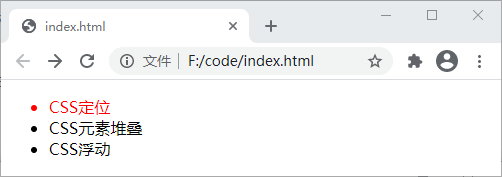
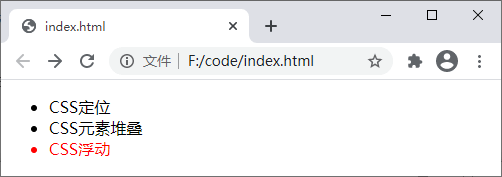
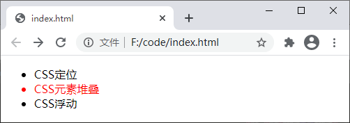

CSS伪类选择器（非常详细）
伪类是 W3C 制定的一套选择器的特殊状态，通过伪类您可以设置元素的动态状态，例如悬停（hover）、点击（active）以及文档中不能通过其它选择器选择的元素（这些元素没有 ID 或 class 属性），例如第一个子元素（first-child）或者最后一个子元素（last-child）。
伪类的名称不区分大小写，但需要以冒号
CSS 中提供了各种各样的伪类，如下表所示：
前面在介绍《链接》时我们已经简单介绍了 :link、:visited、:active 和 :hover 几个伪类的使用，这里不再重复介绍，下面我们再来介绍几个比较常用的伪类。
伪类的名称不区分大小写，但需要以冒号
:开头。另外，伪类需要与 CSS 中的选择器结合使用，语法格式如下：
selector:pseudo-class {
property: value;
}
CSS 中提供了各种各样的伪类，如下表所示：
| 选择器 | 例子 | 例子描述 |
|---|---|---|
| :active | a:active | 匹配被点击的链接 |
| :checked | input:checked | 匹配处于选中状态的 <input> 元素 |
| :disabled | input:disabled | 匹配每个被禁用的 <input> 元素 |
| :empty | p:empty | 匹配任何没有子元素的 <p> 元素 |
| :enabled | input:enabled | 匹配每个已启用的 <input> 元素 |
| :first-child | p:first-child | 匹配父元素中的第一个子元素 <p>，<p> 必须是父元素中的第一个子元素 |
| :first-of-type | p:first-of-type | 匹配父元素中的第一个 <p> 元素 |
| :focus | input:focus | 匹配获得焦点的 <input> 元素 |
| :hover | a:hover | 匹配鼠标悬停其上的元素 |
| :in-range | input:in-range | 匹配具有指定取值范围的 <input> 元素 |
| :invalid | input:invalid | 匹配所有具有无效值的 <input> 元素 |
| :lang(language) | p:lang(it) | 匹配每个 lang 属性值以 "it" 开头的 <p> 元素 |
| :last-child | p:last-child | 匹配父元素中的最后一个子元素 <p>， <p> 必须是父元素中的最后一个子元素 |
| :last-of-type | p:last-of-type | 匹配父元素中的最后一个 <p> 元素 |
| :link | a:link | 匹配所有未被访问的链接 |
| :not(selector) | :not(p) | 匹配每个非 <p> 元素的元素 |
| :nth-child(n) | p:nth-child(2) | 匹配父元素中的第二个子元素 <p> |
| :nth-last-child(n) | p:nth-last-child(2) | 匹配父元素的倒数第二个子元素 <p> |
| :nth-last-of-type(n) | p:nth-last-of-type(2) | 匹配父元素的倒数第二个子元素 <p> |
| :nth-of-type(n) | p:nth-of-type(2) | 匹配父元素的第二个子元素 <p> |
| :only-of-type | p:only-of-type | 匹配父元素中唯一的 <p> 元素 |
| :only-child | p:only-child | 匹配父元素中唯一的子元素 <p> |
| :optional | input:optional | 匹配不带 "required" 属性的 <input> 元素 |
| :out-of-range | input:out-of-range | 匹配值在指定范围之外的 <input> 元素 |
| :read-only | input:read-only | 匹配指定了 "readonly" 属性的 <input> 元素 |
| :read-write | input:read-write | 匹配不带 "readonly" 属性的 <input> 元素 |
| :required | input:required | 匹配指定了 "required" 属性的 <input> 元素 |
| :root | root | 匹配元素的根元素，在 HTML 中，根元素永远是 HTML |
| :target | #news:target | 匹配当前活动的 #news 元素（单击包含该锚名称的 URL） |
| :valid | input:valid | 匹配所有具有有效值的 <input> 元素 |
| :visited | a:visited | 匹配所有已经访问过的链接 |
前面在介绍《链接》时我们已经简单介绍了 :link、:visited、:active 和 :hover 几个伪类的使用，这里不再重复介绍，下面我们再来介绍几个比较常用的伪类。
1、first-child
伪类 first-child 能够匹配指定父元素下的第一个子元素，例如 ul li:first-child 能够匹配 <ul> 元素下的第一个 <li> 元素，示例代码如下：
<!DOCTYPE html>
<html>
<head>
<style>
ul li:first-child { /*匹配<ul>下的第一个<li>标签*/
color: red;
}
</style>
</head>
<body>
<ul>
<li>CSS定位</li>
<li>CSS元素堆叠</li>
<li>CSS浮动</li>
</ul>
</body>
</html>
运行结果如下图所示：

图：first-child 伪类
图：first-child 伪类
2、last-child
与 first-child 类似，伪类 last-child 能够匹配指定父元素下的最后一个子元素，例如 ul li:last-child 能够匹配 <ul> 元素下的最后一个 <li> 元素，示例代码如下：
<!DOCTYPE html>
<html>
<head>
<style>
ul li:last-child { /*匹配<ul>下的最后一个<li>标签*/
color: red;
}
</style>
</head>
<body>
<ul>
<li>CSS定位</li>
<li>CSS元素堆叠</li>
<li>CSS浮动</li>
</ul>
</body>
</html>
运行结果如下图所示：

图：last-child 伪类
图：last-child 伪类
3、nth-child
伪类 nth-child 是 CSS3 中新增的，它可以匹配指定元素下的第 n 个子元素，例如 ul li:nth-child(2) 能够匹配 <ul> 元素下的第二个 <li> 元素，示例代码如下：
<!DOCTYPE html>
<html>
<head>
<style>
ul li:nth-child(2) { /*匹配<ul>下的第二个<li>标签*/
color: red;
}
</style>
</head>
<body>
<ul>
<li>CSS定位</li>
<li>CSS元素堆叠</li>
<li>CSS浮动</li>
</ul>
</body>
</html>
运行结果如下图所示：

图：nth-child 伪类
图：nth-child 伪类
关注公众号「站长严长生」，在手机上阅读所有教程，随时随地都能学习。内含一款搜索神器，免费下载全网书籍和视频。

微信扫码关注公众号